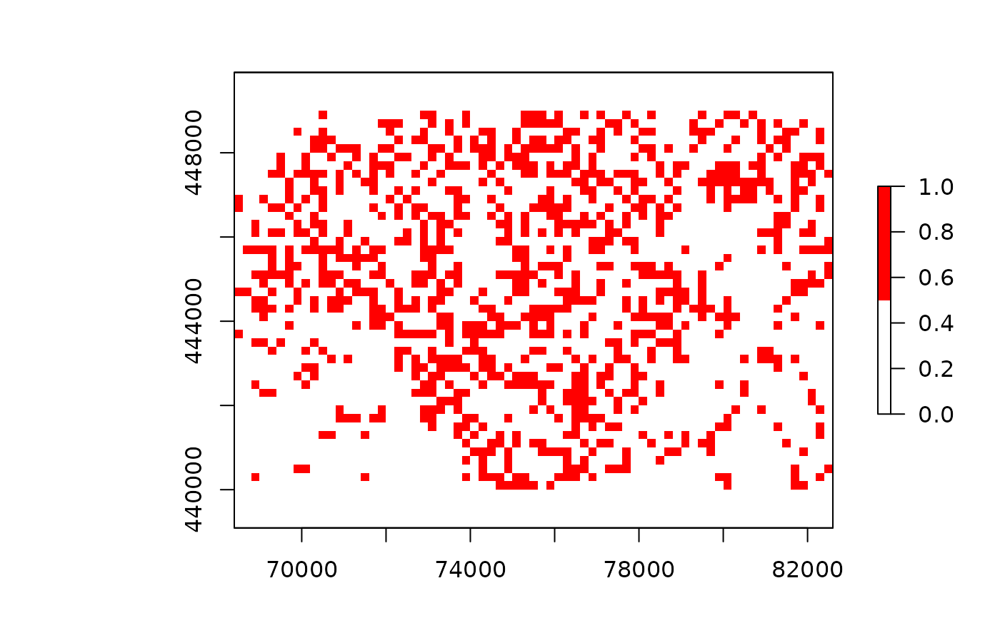

protect_smooth reduces the sensitivity by applying a Gaussian smoother,
making the values less localized.
protect_smooth(x, bw = raster::res(x$value), ...)
Arguments
| x | raster object |
|---|---|
| bw | bandwidth |
| ... | passed through to |
Details
The sensitivity of a raster can be decreased by applying a kernel density smoother as
argued by de Jonge et al. (2016) and de Wolf et al. (2018). Smoothing spatially spreads
localized values, reducing the risk for location disclosure. Note that
smoothing often visually enhances detection of spatial patterns.
The kernel applied is a Gaussian kernel with a bandwidth bw supplied by the user.
The smoother acts upon the x$value$count and x$value$sum
from which a new x$value$mean is derived.
References
de Jonge, E., & de Wolf, P. P. (2016, September). Spatial smoothing and statistical disclosure control. In International Conference on Privacy in Statistical Databases (pp. 107-117). Springer, Cham.
de Wolf, P. P., & de Jonge, E. (2018, September). Safely Plotting Continuous Variables on a Map. In International Conference on Privacy in Statistical Databases (pp. 347-359). Springer, Cham.
See also
Other protection methods:
protect_quadtree(),
remove_sensitive()
Examples
library(sdcSpatial) library(raster) data(enterprises) # create a sdc_raster from point data with raster with # a resolution of 200m production <- sdc_raster(enterprises, variable = "production" , r = 200, min_count = 3) print(production)#> numeric sdc_raster object: #> resolution: 200 200 , max_risk: 0.95 , min_count: 3 #> mean sensitivity score [0,1]: 0.6328234# plot the raster zlim <- c(0, 3e4) # show which raster cells are sensitive plot(production, zlim=zlim)# but we can also retrieve directly the raster sensitive <- is_sensitive(production, min_count = 3) plot(sensitive, col = c('white', 'red'))#> [1] 0.6328234#> [1] 0.6328234# let's smooth to reduce the sensitivity smoothed <- protect_smooth(production, bw = 400) plot(smoothed)# let's smooth to reduce the sensitivity, with higher resolution smoothed <- protect_smooth(production, bw = 400, fact=4, keep_resolution=FALSE) plot(smoothed)#> [1] 0.007962441# let's remove the sensitive data. smoothed_safe <- remove_sensitive(smoothed, min_count = 3) plot(smoothed_safe)# let's communicate! production_mean <- mean(smoothed_safe) production_total <- sum(smoothed_safe) # and create a contour plot raster::filledContour(production_mean, nlevels = 6, main = "Mean production")# generated with R 3.6 >= #col <- hcl.colors(11, rev=TRUE) col <- c("#FDE333", "#C2DE34", "#7ED357", "#00C475", "#00B28A", "#009B95" , "#008298", "#006791", "#274983", "#44286E", "#4B0055" ) raster::filledContour(production_total, nlevels = 11 , col = col , main="Total production")